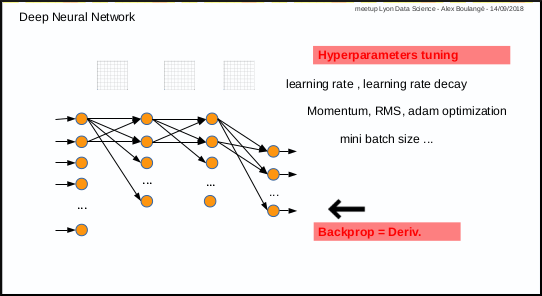
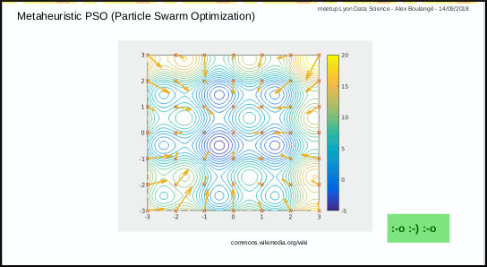
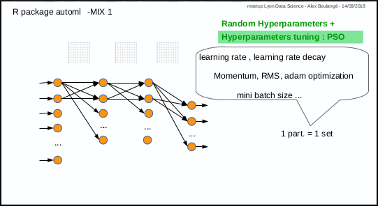
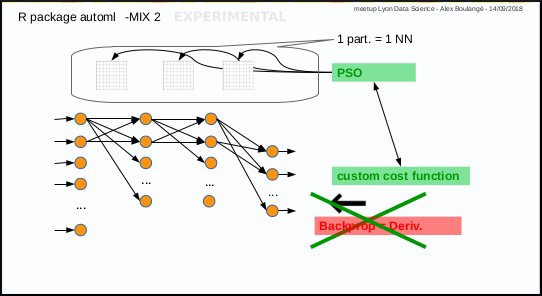

automl.Rmd 0.1 Introduction to automl package
0.2 Why & how automl
0.2.1 Deep Learning existing frameworks, disadvantages
0.2.2 Neural Network - Deep Learning, disadvantages
0.2.3 Metaheuristic - PSO, benefits
0.2.4 Birth of automl package
0.2.5 Mix 1: hyperparameters tuning with PSO
0.2.6 Mix 2: PSO instead of gradient descent
0.3 First steps: How to
0.3.1 fit a regression model manually (hard way)
0.3.2 fit a regression model automatically (easy way, Mix 1)
0.3.3 fit a regression model experimentally (experimental way, Mix 2)
0.3.4 fit a regression model with custom cost (experimental way, Mix 2)
0.3.5 fit a classification model with softmax (Mix 2)
0.3.6 change the model parameters (shape …)
0.3.7 continue training on saved model (fine tuning …)
0.3.8 use the 2 steps automatic approach
0.4 ToDo List
This document is intended to answer the following questions; why & how automl and how to use it
automl package provides:
-Deep Learning last tricks (those who have taken Andrew NG’s MOOC on Coursera will be in familiar territory)
-hyperparameters autotune with metaheuristic (PSO)
-experimental stuff and more to come (you’re welcome as coauthor!)
Deploying and maintaining most Deep Learning frameworks means: Python…
R language is so simple to install and maintain in production environments that it is obvious to use a pure R based package for deep learning !
Disadvantages :
1st disadvantage: you have to test manually different combinations of parameters (number of layers, nodes, activation function, etc …) and then also tune manually hyper parameters for training (learning rate, momentum, mini batch size, etc …)
2nd disadvantage: only for those who are not mathematicians, calculating derivative in case of new cost or activation function, may by an issue.

The Particle Swarm Optimization algorithm is a great and simple one.
In a few words, the first step consists in throwing randomly a set of particles in a space and the next steps consist in discovering the best solution while converging.

video tutorial from Yarpiz is a great ressource
automl package was born from the idea to use metaheuristic PSO to address the identified disadvantages above.
And last but not the least reason: use R and R only :-)
3 functions are available:
- automl_train_manual: the manual mode to train a model
- automl_train: the automatic mode to train model
- automl_predict: the prediction function to apply a trained model on datas
Mix 1 consists in using PSO algorithm to optimize the hyperparameters: each particle corresponds to a set of hyperparameters.
The automl_train function was made to do that.

Mix 2 is experimental, it consists in using PSO algorithm to optimize the weights of Neural Network in place of gradient descent: each particle corresponds to a set of neural network weights matrices.
The automl_train_manual function do that too.

For those who will laugh at seeing deep learning with one hidden layer and the Iris data set of 150 records, I will say: you’re perfectly right :-)
The goal at this stage is simply to take the first steps
Subject: predict Sepal.Length given other Iris parameters
1st with gradient descent and default hyperparameters value for learning rate (0.001) and mini batch size (32)
data(iris)
xmat <- cbind(iris[,2:4], as.numeric(iris$Species))
ymat <- iris[,1]
amlmodel <- automl_train_manual(Xref = xmat, Yref = ymat)## (cost: mse)
## cost epoch10: 20.9340400047156 (cv cost: 25.205632342013) (LR: 0.001 )
## cost epoch20: 20.6280923387762 (cv cost: 23.8214521197268) (LR: 0.001 )
## cost epoch30: 20.3222407903838 (cv cost: 22.1899741289456) (LR: 0.001 )
## cost epoch40: 20.0217966054298 (cv cost: 21.3908446693146) (LR: 0.001 )
## cost epoch50: 19.7584058034009 (cv cost: 20.7170232035934) (LR: 0.001 )
## dim X: [4,135]
## dim W1: [10,4] (min|max: -1.7491071951295, 1.81621228893733)
## dim bB1: [10,1] (min|max: -0.147332564945795, 0.0570244572705301)
## dim j1: [10,1] (min|max: 0.906596236812877, 1.06780350658908)
## dim W2: [1,10] (min|max: -0.0297138422581393, 0.0225329925000395)
## dim bB2: [1,1] (min|max: 0.216274212807187, 0.216274212807187)
## dim j2: [1,1] (min|max: 0.896170058073578, 0.896170058073578)
## dim Y: [1,135]res <- cbind(ymat, automl_predict(model = amlmodel, X = xmat))
colnames(res) <- c('actual', 'predict')
head(res)## actual predict
## [1,] 5.1 -2.063614
## [2,] 4.9 -2.487673
## [3,] 4.7 -2.471912
## [4,] 4.6 -2.281035
## [5,] 5.0 -1.956937
## [6,] 5.4 -1.729314:-[] no pain, no gain …
After some manual fine tuning on learning rate, mini batch size and iterations number (epochs):
data(iris)
xmat <- cbind(iris[,2:4], as.numeric(iris$Species))
ymat <- iris[,1]
amlmodel <- automl_train_manual(Xref = xmat, Yref = ymat,
hpar = list(learningrate = 0.01,
minibatchsize = 2^2,
numiterations = 30))## (cost: mse)
## cost epoch10: 5.55679482839698 (cv cost: 4.87492997304325) (LR: 0.01 )
## cost epoch20: 1.64996951479802 (cv cost: 1.50339773126712) (LR: 0.01 )
## cost epoch30: 0.647727077375946 (cv cost: 0.60142564484723) (LR: 0.01 )
## dim X: [4,135]
## dim W1: [10,4] (min|max: -1.98507776416897, 1.97659598029097)
## dim bB1: [10,1] (min|max: -0.861796459549848, 1.31208805654204)
## dim j1: [10,1] (min|max: -0.186679447292938, 2.12680721214952)
## dim W2: [1,10] (min|max: -0.400821465269633, 0.271454318518162)
## dim bB2: [1,1] (min|max: 5.20448636682865, 5.20448636682865)
## dim j2: [1,1] (min|max: 0.353886604123629, 0.353886604123629)
## dim Y: [1,135]res <- cbind(ymat, automl_predict(model = amlmodel, X = xmat))
colnames(res) <- c('actual', 'predict')
head(res)## actual predict
## [1,] 5.1 4.478478
## [2,] 4.9 4.215683
## [3,] 4.7 4.275902
## [4,] 4.6 4.313141
## [5,] 5.0 4.531038
## [6,] 5.4 4.742847Better result, but with human efforts!
Same subject: predict Sepal.Length given other Iris parameters
data(iris)
xmat <- as.matrix(cbind(iris[,2:4], as.numeric(iris$Species)))
ymat <- iris[,1]
start.time <- Sys.time()
amlmodel <- automl_train(Xref = xmat, Yref = ymat,
autopar = list(psopartpopsize = 15,
numiterations = 5,
auto_layers_max = 1,
nbcores = 4))## (cost: mse)
## iteration 1 particle 1 weighted err: 22.20611 (train: 20.93004 cvalid: 17.73985 ) BEST MODEL KEPT
## iteration 1 particle 2 weighted err: 21.48398 (train: 20.87709 cvalid: 19.35987 ) BEST MODEL KEPT
## iteration 1 particle 3 weighted err: 22.98075 (train: 20.96822 cvalid: 15.9369 )
## iteration 1 particle 4 weighted err: 22.64428 (train: 21.44958 cvalid: 22.19627 )
## iteration 1 particle 5 weighted err: 22.03677 (train: 20.83123 cvalid: 17.81739 )
## iteration 1 particle 6 weighted err: 22.30679 (train: 21.02051 cvalid: 17.80482 )
## iteration 1 particle 7 weighted err: 22.15835 (train: 20.67513 cvalid: 16.96709 )
## iteration 1 particle 8 weighted err: 21.04265 (train: 20.1281 cvalid: 17.84174 ) BEST MODEL KEPT
## iteration 1 particle 9 weighted err: 21.0425 (train: 20.72162 cvalid: 19.91941 ) BEST MODEL KEPT
## iteration 1 particle 10 weighted err: 13.78127 (train: 13.54355 cvalid: 12.94923 ) BEST MODEL KEPT
## iteration 1 particle 11 weighted err: 20.34595 (train: 19.54807 cvalid: 17.55337 )
## iteration 1 particle 12 weighted err: 21.86865 (train: 20.99222 cvalid: 18.80114 )
## iteration 1 particle 13 weighted err: 14.11782 (train: 13.54468 cvalid: 12.11184 )
## iteration 1 particle 14 weighted err: 23.71203 (train: 20.88439 cvalid: 13.81528 )
## iteration 1 particle 15 weighted err: 22.20701 (train: 20.90727 cvalid: 17.65792 )
## iteration 2 particle 1 weighted err: 17.28484 (train: 17.05718 cvalid: 16.48803 )
## iteration 2 particle 2 weighted err: 20.34511 (train: 19.54902 cvalid: 17.55877 )
## iteration 2 particle 3 weighted err: 18.15141 (train: 17.30269 cvalid: 15.18087 )
## iteration 2 particle 4 weighted err: 18.5541 (train: 18.20259 cvalid: 17.32379 )
## iteration 2 particle 5 weighted err: 6.25782 (train: 6.12291 cvalid: 5.78564 ) BEST MODEL KEPT
## iteration 2 particle 6 weighted err: 21.35519 (train: 20.47036 cvalid: 18.25828 )
## iteration 2 particle 7 weighted err: 13.75975 (train: 12.98786 cvalid: 11.05813 )
## iteration 2 particle 8 weighted err: 21.04265 (train: 20.1281 cvalid: 17.84174 )
## iteration 2 particle 9 weighted err: 2.17826 (train: 1.03059 cvalid: 1.74789 ) BEST MODEL KEPT
## iteration 2 particle 10 weighted err: 13.78127 (train: 13.54355 cvalid: 12.94923 )
## iteration 2 particle 11 weighted err: 1.4612 (train: 0.54284 cvalid: 1.11682 ) BEST MODEL KEPT
## iteration 2 particle 12 weighted err: 18.88923 (train: 18.61216 cvalid: 17.91948 )
## iteration 2 particle 13 weighted err: 14.11782 (train: 13.54468 cvalid: 12.11184 )
## iteration 2 particle 14 weighted err: 21.46543 (train: 20.5646 cvalid: 18.31253 )
## iteration 2 particle 15 weighted err: 14.74928 (train: 14.56655 cvalid: 14.10972 )
## iteration 3 particle 1 weighted err: 17.28484 (train: 17.05718 cvalid: 16.48803 )
## iteration 3 particle 2 weighted err: 20.34511 (train: 19.54902 cvalid: 17.55877 )
## iteration 3 particle 3 weighted err: 0.76426 (train: 0.01617 cvalid: 0.48373 ) BEST MODEL KEPT
## iteration 3 particle 4 weighted err: 18.5541 (train: 18.20259 cvalid: 17.32379 )
## iteration 3 particle 5 weighted err: 6.25782 (train: 6.12291 cvalid: 5.78564 )
## iteration 3 particle 6 weighted err: 17.89662 (train: 17.65917 cvalid: 17.06555 )
## iteration 3 particle 7 weighted err: 13.75975 (train: 12.98786 cvalid: 11.05813 )
## iteration 3 particle 8 weighted err: 5.0488 (train: 4.92663 cvalid: 4.62118 )
## iteration 3 particle 9 weighted err: 2.17826 (train: 1.03059 cvalid: 1.74789 )
## iteration 3 particle 10 weighted err: 12.71182 (train: 12.48331 cvalid: 11.91204 )
## iteration 3 particle 11 weighted err: 1.4612 (train: 0.54284 cvalid: 1.11682 )
## iteration 3 particle 12 weighted err: 18.88923 (train: 18.61216 cvalid: 17.91948 )
## iteration 3 particle 13 weighted err: 0.6469 (train: 0.02339 cvalid: 0.41308 ) BEST MODEL KEPT
## iteration 3 particle 14 weighted err: 19.09523 (train: 18.19735 cvalid: 15.95267 )
## iteration 3 particle 15 weighted err: 14.74928 (train: 14.56655 cvalid: 14.10972 )
## iteration 4 particle 1 weighted err: 12.94662 (train: 4.40029 cvalid: 9.74174 )
## iteration 4 particle 2 weighted err: 18.67702 (train: 17.28413 cvalid: 18.15469 )
## iteration 4 particle 3 weighted err: 0.76426 (train: 0.01617 cvalid: 0.48373 )
## iteration 4 particle 4 weighted err: 11.2243 (train: 11.00578 cvalid: 10.45947 )
## iteration 4 particle 5 weighted err: 1.93528 (train: 0.00141 cvalid: 1.21008 )
## iteration 4 particle 6 weighted err: 17.89662 (train: 17.65917 cvalid: 17.06555 )
## iteration 4 particle 7 weighted err: 0.49851 (train: 0.42819 cvalid: 0.47214 ) BEST MODEL KEPT
## iteration 4 particle 8 weighted err: 0.91373 (train: 0.00154 cvalid: 0.57166 )
## iteration 4 particle 9 weighted err: 0.93498 (train: 0.92789 cvalid: 0.91017 )
## iteration 4 particle 10 weighted err: 8.31684 (train: 8.15595 cvalid: 7.75375 )
## iteration 4 particle 11 weighted err: 1.4612 (train: 0.54284 cvalid: 1.11682 )
## iteration 4 particle 12 weighted err: 16.48857 (train: 16.22736 cvalid: 15.57431 )
## iteration 4 particle 13 weighted err: 0.6469 (train: 0.02339 cvalid: 0.41308 )
## iteration 4 particle 14 weighted err: 6.071 (train: 1.5917 cvalid: 4.39126 )
## iteration 4 particle 15 weighted err: 7.21248 (train: 0.12135 cvalid: 4.55331 )
## iteration 5 particle 1 weighted err: 7.08302 (train: 6.57048 cvalid: 5.28913 )
## iteration 5 particle 2 weighted err: 7.71355 (train: 7.25568 cvalid: 6.11101 )
## iteration 5 particle 3 weighted err: 0.74873 (train: 0.00073 cvalid: 0.46823 )
## iteration 5 particle 4 weighted err: 10.69926 (train: 10.14015 cvalid: 8.74239 )
## iteration 5 particle 5 weighted err: 1.93528 (train: 0.00141 cvalid: 1.21008 )
## iteration 5 particle 6 weighted err: 16.99977 (train: 9.15757 cvalid: 14.05894 )
## iteration 5 particle 7 weighted err: 0.49851 (train: 0.42819 cvalid: 0.47214 )
## iteration 5 particle 8 weighted err: 0.91373 (train: 0.00154 cvalid: 0.57166 )
## iteration 5 particle 9 weighted err: 0.93498 (train: 0.92789 cvalid: 0.91017 )
## iteration 5 particle 10 weighted err: 2.35178 (train: 2.29943 cvalid: 2.16857 )
## iteration 5 particle 11 weighted err: 0.65705 (train: 0.59243 cvalid: 0.63282 )
## iteration 5 particle 12 weighted err: 16.48857 (train: 16.22736 cvalid: 15.57431 )
## iteration 5 particle 13 weighted err: 0.6469 (train: 0.02339 cvalid: 0.41308 )
## iteration 5 particle 14 weighted err: 6.071 (train: 1.5917 cvalid: 4.39126 )
## iteration 5 particle 15 weighted err: 5.15812 (train: 4.72209 cvalid: 3.63203 )## time ellapsed: 2.45968851645788res <- cbind(ymat, automl_predict(model = amlmodel, X = xmat))
colnames(res) <- c('actual', 'predict')
head(res)## actual predict
## [1,] 5.1 4.975551
## [2,] 4.9 4.667541
## [3,] 4.7 4.735524
## [4,] 4.6 4.784364
## [5,] 5.0 5.037152
## [6,] 5.4 5.325999It’s even better, with no human efforts but machine time
Windows users won’t benefit from parallelization, the function uses parallel package included with R base…
Same subject: predict Sepal.Length given other Iris parameters
data(iris)
xmat <- as.matrix(cbind(iris[,2:4], as.numeric(iris$Species)))
ymat <- iris[,1]
amlmodel <- automl_train_manual(Xref = xmat, Yref = ymat,
hpar = list(modexec = 'trainwpso',
numiterations = 30,
psopartpopsize = 50))## (cost: mse)
## cost epoch10: 0.113576786377019 (cv cost: 0.0967069106128153) (LR: 0 )
## cost epoch20: 0.0595472259640828 (cv cost: 0.0831404427407914) (LR: 0 )
## cost epoch30: 0.0494578776185938 (cv cost: 0.0538888075333611) (LR: 0 )
## dim X: [4,135]
## dim W1: [10,4] (min|max: -9.74023257221123, 10)
## dim bB1: [10,1] (min|max: -0.387606162285625, 0.1710556969915)
## dim j1: [10,1] (min|max: 0.124551360015852, 5.3818348209072)
## dim W2: [1,10] (min|max: -0.076169592619662, 0.0164342147682301)
## dim bB2: [1,1] (min|max: 5.81920420695991, 5.81920420695991)
## dim j2: [1,1] (min|max: 0.739758079637033, 0.739758079637033)
## dim Y: [1,135]res <- cbind(ymat, automl_predict(model = amlmodel, X = xmat))
colnames(res) <- c('actual', 'predict')
head(res)## actual predict
## [1,] 5.1 5.028114
## [2,] 4.9 4.673366
## [3,] 4.7 4.738188
## [4,] 4.6 4.821392
## [5,] 5.0 5.099064
## [6,] 5.4 5.277315Pretty good too, even better!
Same subject: predict Sepal.Length given other Iris parameters
Let’s try with Mean Absolute Percentage Error instead of Mean Square Error
data(iris)
xmat <- as.matrix(cbind(iris[,2:4], as.numeric(iris$Species)))
ymat <- iris[,1]
f <- 'J=abs((y-yhat)/y)'
f <- c(f, 'J=sum(J[!is.infinite(J)],na.rm=TRUE)')
f <- c(f, 'J=(J/length(y))')
f <- paste(f, collapse = ';')
amlmodel <- automl_train_manual(Xref = xmat, Yref = ymat,
hpar = list(modexec = 'trainwpso',
numiterations = 30,
psopartpopsize = 50,
costcustformul = f))## (cost: custom)
## cost epoch10: 0.901580275333795 (cv cost: 1.15936129555304) (LR: 0 )
## cost epoch20: 0.890142834441629 (cv cost: 1.24167078564786) (LR: 0 )
## cost epoch30: 0.886088388448652 (cv cost: 1.22756121243449) (LR: 0 )
## dim X: [4,135]
## dim W1: [10,4] (min|max: -3.74973275656952, 2.18515186830331)
## dim bB1: [10,1] (min|max: -0.0193015541942629, 0.0434980136379077)
## dim j1: [10,1] (min|max: 0.0452374980846706, 1.31756069619528)
## dim W2: [1,10] (min|max: -0.0137408031397005, 0.0448117596944683)
## dim bB2: [1,1] (min|max: 0.0216923703335529, 0.0216923703335529)
## dim j2: [1,1] (min|max: -6.12554946752224, -6.12554946752224)
## dim Y: [1,135]res <- cbind(ymat, automl_predict(model = amlmodel, X = xmat))
colnames(res) <- c('actual', 'predict')
head(res)## actual predict
## [1,] 5.1 4.693915
## [2,] 4.9 4.470968
## [3,] 4.7 4.482036
## [4,] 4.6 4.593667
## [5,] 5.0 4.738504
## [6,] 5.4 4.914144Subject: predict Species given other Iris parameters
Softmax is available with PSO, no derivative needed ;-)
data(iris)
xmat = iris[,1:4]
lab2pred <- levels(iris$Species)
lghlab <- length(lab2pred)
iris$Species <- as.numeric(iris$Species)
ymat <- matrix(seq(from = 1, to = lghlab, by = 1), nrow(xmat), lghlab, byrow = TRUE)
ymat <- (ymat == as.numeric(iris$Species)) + 0
amlmodel <- automl_train_manual(Xref = xmat, Yref = ymat,
hpar = list(modexec = 'trainwpso',
layersshape = c(10, 0),
layersacttype = c('relu', 'softmax'),
layersdropoprob = c(0, 0),
numiterations = 50,
psopartpopsize = 50))## (cost: crossentropy)
## cost epoch10: 0.373706545886467 (cv cost: 0.36117608867856) (LR: 0 )
## cost epoch20: 0.267034060152876 (cv cost: 0.163635821437066) (LR: 0 )
## cost epoch30: 0.212054571476337 (cv cost: 0.112664100290429) (LR: 0 )
## cost epoch40: 0.154158717402463 (cv cost: 0.102895917099299) (LR: 0 )
## cost epoch50: 0.141037927317585 (cv cost: 0.0864623836595045) (LR: 0 )
## dim X: [4,135]
## dim W1: [10,4] (min|max: -6.06580422377101, 3.99787561794882)
## dim bB1: [10,1] (min|max: -0.0383581046802848, 0.182545610199413)
## dim j1: [10,1] (min|max: 0.233318516360136, 2.76049296574839)
## dim W2: [3,10] (min|max: -0.0518744226871539, 0.0803609160652066)
## dim bB2: [3,1] (min|max: -0.0165862349385389, 0.0974829458643821)
## dim j2: [3,1] (min|max: 1.35026790529631, 4.95476076574517)
## dim Y: [3,135]res <- cbind(ymat, automl_predict(model = amlmodel, X = xmat))
colnames(res) <- c(paste('act',lab2pred, sep = '_'),
paste('pred',lab2pred, sep = '_'))
head(res)## act_setosa act_versicolor act_virginica pred_setosa pred_versicolor
## 1 1 0 0 0.9863481 0.003268881
## 2 1 0 0 0.9897295 0.003387193
## 3 1 0 0 0.9856347 0.002025946
## 4 1 0 0 0.9819881 0.004638452
## 5 1 0 0 0.9827623 0.003115452
## 6 1 0 0 0.9329747 0.031624836
## pred_virginica
## 1 0.010383018
## 2 0.006883349
## 3 0.012339349
## 4 0.013373451
## 5 0.014122277
## 6 0.035400439## act_setosa act_versicolor act_virginica pred_setosa pred_versicolor
## 145 0 0 1 0.02549091 2.877957e-05
## 146 0 0 1 0.08146753 2.005664e-03
## 147 0 0 1 0.05465750 1.979652e-02
## 148 0 0 1 0.06040415 1.974869e-02
## 149 0 0 1 0.02318048 4.133826e-04
## 150 0 0 1 0.03696852 5.230936e-02
## pred_virginica
## 145 0.9744803
## 146 0.9165268
## 147 0.9255460
## 148 0.9198472
## 149 0.9764061
## 150 0.9107221Same subject: predict Species given other Iris parameters
1st example: with gradient descent and 2 hidden layers containing 10 nodes, with various activation functions for hidden layers
data(iris)
xmat = iris[,1:4]
lab2pred <- levels(iris$Species)
lghlab <- length(lab2pred)
iris$Species <- as.numeric(iris$Species)
ymat <- matrix(seq(from = 1, to = lghlab, by = 1), nrow(xmat), lghlab, byrow = TRUE)
ymat <- (ymat == as.numeric(iris$Species)) + 0
amlmodel <- automl_train_manual(
Xref = xmat, Yref = ymat,
hpar = list(
layersshape = c(10, 10, 0),
layersacttype = c('tanh', 'relu', ''),
layersdropoprob = c(0, 0, 0)))## (cost: crossentropy)
## cost epoch10: 2.41325242052537 (cv cost: 0.951806491052378) (LR: 0.001 )
## cost epoch20: 2.39981582102664 (cv cost: 0.824359586244002) (LR: 0.001 )
## cost epoch30: 2.38675064044667 (cv cost: 0.964281122916916) (LR: 0.001 )
## cost epoch40: 2.37511219594812 (cv cost: 0.984804476392134) (LR: 0.001 )
## cost epoch50: 2.36537225332899 (cv cost: 1.00906865173689) (LR: 0.001 )
## dim X: [4,135]
## dim W1: [10,4] (min|max: -1.17844190602841, 1.17623904342124)
## dim bB1: [10,1] (min|max: -0.171280904463528, 0.170073959995729)
## dim j1: [10,1] (min|max: 0.834989059174756, 1.04591303447967)
## dim W2: [10,10] (min|max: -0.864498450147197, 1.17157236499935)
## dim bB2: [10,1] (min|max: -0.166479516706595, -0.0175789096131513)
## dim j2: [10,1] (min|max: 0.915919628756264, 1.05962744467235)
## dim W3: [3,10] (min|max: -0.0443294023087402, 0.0663865843224797)
## dim bB3: [3,1] (min|max: -0.084494659874969, -0.0474264925511486)
## dim j3: [3,1] (min|max: 0.880875803781447, 0.947129830590927)
## dim Y: [3,135]nb: last activation type may be left to blank (it will be set automatically)
2nd example: with gradient descent and no hidden layer (logistic regression)
data(iris)
xmat = iris[,1:4]
lab2pred <- levels(iris$Species)
lghlab <- length(lab2pred)
iris$Species <- as.numeric(iris$Species)
ymat <- matrix(seq(from = 1, to = lghlab, by = 1), nrow(xmat), lghlab, byrow = TRUE)
ymat <- (ymat == as.numeric(iris$Species)) + 0
amlmodel <- automl_train_manual(Xref = xmat, Yref = ymat,
hpar = list(layersshape = c(0),
layersacttype = c('sigmoid'),
layersdropoprob = c(0)))## (cost: crossentropy)
## cost epoch10: 2.41256625698174 (cv cost: 1.52787772773656) (LR: 0.001 )
## cost epoch20: 2.39487960709668 (cv cost: 1.30539484912328) (LR: 0.001 )
## cost epoch30: 2.37790838174604 (cv cost: 0.914874371089548) (LR: 0.001 )
## cost epoch40: 2.36237291354489 (cv cost: 1.23368286521283) (LR: 0.001 )
## cost epoch50: 2.34978864866666 (cv cost: 1.26105975399258) (LR: 0.001 )
## dim X: [4,135]
## dim W1: [3,4] (min|max: -0.0824233319087832, 0.0665219165277063)
## dim bB1: [3,1] (min|max: -0.0853265142410669, -0.0504193608620526)
## dim j1: [3,1] (min|max: 0.877190207011175, 0.912854186557978)
## dim Y: [3,135]We saved the model to continue training later (see below in next section)
Subject: continue training on saved model (model saved above in last section)
amlmodel <- automl_train_manual(Xref = xmat, Yref = ymat,
hpar = list(numiterations = 100,
psopartpopsize = 50),
mdlref = amlmodelsaved)## (cost: crossentropy)
## cost epoch10: 2.33948479711291 (cv cost: 1.35721982997238) (LR: 0.001 )
## cost epoch20: 2.32669285753264 (cv cost: 1.30152708067868) (LR: 0.001 )
## cost epoch30: 2.31504805288479 (cv cost: 1.29552449383989) (LR: 0.001 )
## cost epoch40: 2.30430035748777 (cv cost: 1.29397405747141) (LR: 0.001 )
## cost epoch50: 2.29430374216071 (cv cost: 1.29240693651625) (LR: 0.001 )
## cost epoch60: 2.28495815493859 (cv cost: 1.29246202979512) (LR: 0.001 )
## cost epoch70: 2.27608005019126 (cv cost: 1.29620090185108) (LR: 0.001 )
## cost epoch80: 2.26753980962059 (cv cost: 1.30192962431549) (LR: 0.001 )
## cost epoch90: 2.25934270485252 (cv cost: 1.30591289162664) (LR: 0.001 )
## cost epoch100: 2.25229290115905 (cv cost: 1.30730635529278) (LR: 0.001 )
## dim X: [4,135]
## dim W1: [3,4] (min|max: -0.0584244836620892, 0.0979357668398827)
## dim bB1: [3,1] (min|max: -0.235339245685138, -0.147348457818883)
## dim j1: [3,1] (min|max: 0.675771007836825, 0.773425314642678)
## dim Y: [3,135]We can see the error continuing to decrease from last training
The training continued with the same parameters, but notice that we were able to change the number of iterations
Same subject: predict Species given other Iris parameters
Let’s try the automatic approach in 2 steps with the same Logistic Regression architecture;
1st step goal is performance, overfitting
2nd step is robustness, regularization
data(iris)
xmat = iris[,1:4]
lab2pred <- levels(iris$Species)
lghlab <- length(lab2pred)
iris$Species <- as.numeric(iris$Species)
ymat <- matrix(seq(from = 1, to = lghlab, by = 1), nrow(xmat), lghlab, byrow = TRUE)
ymat <- (ymat == as.numeric(iris$Species)) + 0
amlmodel <- automl_train(Xref = xmat, Yref = ymat,
hpar = list(layersshape = c(0),
layersacttype = c('sigmoid'),
layersdropoprob = c(0)),
autopar = list(auto_runtype = '2steps'))## STEP: 1 (overfitting)
## (cost: crossentropy)
## iteration 1 particle 1 weighted err: 2.42056 BEST MODEL KEPT
## iteration 1 particle 2 weighted err: 2.40494 BEST MODEL KEPT
## iteration 1 particle 3 weighted err: 2.41726
## iteration 1 particle 4 weighted err: 2.42334
## iteration 1 particle 5 weighted err: 2.4091
## iteration 1 particle 6 weighted err: 2.41962
## iteration 1 particle 7 weighted err: 2.40137 BEST MODEL KEPT
## iteration 1 particle 8 weighted err: 2.34594 BEST MODEL KEPT
## iteration 2 particle 1 weighted err: 2.41459
## iteration 2 particle 2 weighted err: 2.39745
## iteration 2 particle 3 weighted err: 2.346
## iteration 2 particle 4 weighted err: 2.41773
## iteration 2 particle 5 weighted err: 2.35627
## iteration 2 particle 6 weighted err: 2.40502
## iteration 2 particle 7 weighted err: 2.38905
## iteration 2 particle 8 weighted err: 2.34594
## iteration 3 particle 1 weighted err: 2.39013
## iteration 3 particle 2 weighted err: 2.36849
## iteration 3 particle 3 weighted err: 2.23385 BEST MODEL KEPT
## iteration 3 particle 4 weighted err: 2.40762
## iteration 3 particle 5 weighted err: 2.33986
## iteration 3 particle 6 weighted err: 2.39917
## iteration 3 particle 7 weighted err: 2.38197
## iteration 3 particle 8 weighted err: 2.34594
## STEP: 2 (regularization)
## (cost: crossentropy)
## iteration 1 particle 1 weighted err: 2.70508 (train: 2.24474 cvalid: 1.09389 ) BEST MODEL KEPT
## iteration 1 particle 2 weighted err: 2.71015 (train: 2.2452 cvalid: 1.08283 )
## iteration 1 particle 3 weighted err: 2.2944 (train: 2.23677 cvalid: 2.0927 ) BEST MODEL KEPT
## iteration 1 particle 4 weighted err: 2.6911 (train: 2.23902 cvalid: 1.1088 )
## iteration 1 particle 5 weighted err: 2.69633 (train: 2.24061 cvalid: 1.10131 )
## iteration 1 particle 6 weighted err: 2.68252 (train: 2.24303 cvalid: 1.14432 )
## iteration 1 particle 7 weighted err: 2.75194 (train: 2.24576 cvalid: 0.98029 )
## iteration 1 particle 8 weighted err: 4.64173 (train: 2.23456 cvalid: 3.73904 )
## iteration 2 particle 1 weighted err: 2.70508 (train: 2.24474 cvalid: 1.09389 )
## iteration 2 particle 2 weighted err: 2.71015 (train: 2.2452 cvalid: 1.08283 )
## iteration 2 particle 3 weighted err: 2.24647 (train: 2.23637 cvalid: 2.21111 ) BEST MODEL KEPT
## iteration 2 particle 4 weighted err: 2.68907 (train: 2.23757 cvalid: 1.1088 )
## iteration 2 particle 5 weighted err: 2.58933 (train: 2.24078 cvalid: 1.36939 )
## iteration 2 particle 6 weighted err: 2.65867 (train: 2.24364 cvalid: 1.20606 )
## iteration 2 particle 7 weighted err: 2.69105 (train: 2.24379 cvalid: 1.12563 )
## iteration 2 particle 8 weighted err: 2.68861 (train: 2.24369 cvalid: 1.13141 )
## iteration 3 particle 1 weighted err: 2.69592 (train: 2.24417 cvalid: 1.11481 )
## iteration 3 particle 2 weighted err: 2.71015 (train: 2.2452 cvalid: 1.08283 )
## iteration 3 particle 3 weighted err: 2.24647 (train: 2.23637 cvalid: 2.21111 )
## iteration 3 particle 4 weighted err: 2.68907 (train: 2.23757 cvalid: 1.1088 )
## iteration 3 particle 5 weighted err: 2.58933 (train: 2.24078 cvalid: 1.36939 )
## iteration 3 particle 6 weighted err: 2.65867 (train: 2.24364 cvalid: 1.20606 )
## iteration 3 particle 7 weighted err: 2.69105 (train: 2.24379 cvalid: 1.12563 )
## iteration 3 particle 8 weighted err: 2.68861 (train: 2.24369 cvalid: 1.13141 )Compared to the last runs (in previous sections above), difference between train and cross validation errors is much more tenuous
Automatically :-)